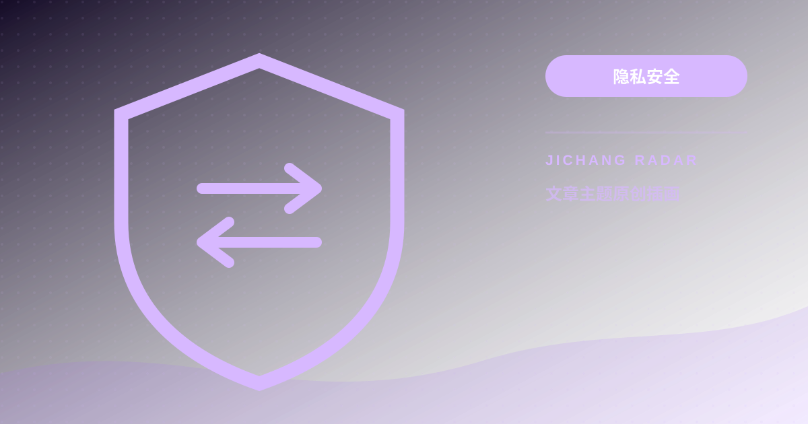
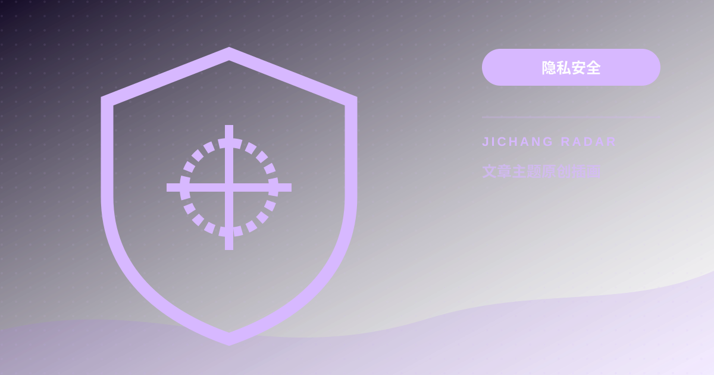

隐私安全14
隐私安全14TOPIC / 9
隐私安全
经过整理的操作步骤、判断方法与风险提示。
隐私安全14 隐私安全15
隐私安全15 隐私安全16
隐私安全16 隐私安全17
隐私安全17 隐私安全21
隐私安全21 隐私安全27
隐私安全27 隐私安全31
隐私安全31
隐私安全41在线订阅转换安全吗？自建 Subconverter 教程与订阅 Token 防偷盗防投毒指南
将机场订阅链接粘贴到公共订阅转换网站，无异于将你的账号凭证与所有节点完全交由第三方。本文曝光后门风险并给出自建安全方案。
继续阅读 →
隐私安全42WebRTC 穿透与 DNS 泄漏彻底防御：用专业工具检测并封堵真实公网 IP 暴露漏洞
开启代理后 IP 已经变了，为什么访问某些安全网站依然能识别你的真实地理位置？本文深挖 WebRTC 与 DNS 泄漏的隐秘通道并提供封堵方案。
继续阅读 →